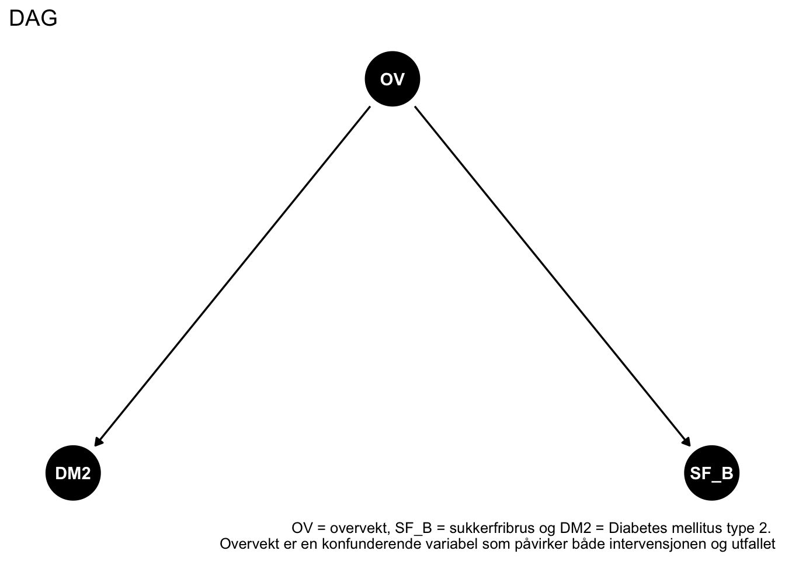

Arbeidskrav 4: Kausal interferens
1 Definisjon av en kasual effekt
Kausal effekt kan defineres som forskjellen på utfallene en person ville opplevd dersom en ble gitt ulike behandlinger. Eksempelvis beskriver Council et al (2000) utfallet ved å sammenlikne en eksperimentell behandling (E), kontra kontroll (C). For hver observasjon som gjøres kan behandlingen kun gi et utfall. Får personen behandling C, blir utfallet C, og motsatt. Rubin (1976), Rosenbaum og Rubin (1983) og Holland (1986), referert i Council et al (2000) utviklet Rubin-Rosenbaum-Holland (RRH)-teorien for kausal effekt. Vi tar dette som utgangspunkt for å svare på definisjonen. I RRH er det forskjellen mellom utfallene hos en person ved E, og C som definerer kausal effekten. For eksempel om vi skulle ønske å finne ut om fysisk aktivitet i form av å gå turer for utrente kan redusere blodtrykk, har vi en gruppe som utfører E, mens gruppe C fortsetter som normalt. Kausal effekten i denne sammenhengen vil være forskjellen på målingen av blodtrykket. Dersom endring er oppstått, vil vi kunne konkludere at E gir en kausal effekt.
2 Hvordan kan vi bruke en eksperimentell studie for å estimere en kausal effekt?
Shadish et al (2002), i likhet med Council et al (2000) beskriver randomiserte eksperimentelle studier som den mest pålitelige metoden, altså gullstandarden for å estimere kausal effekt. Dette gjøres ved at behandlingene blir tilfeldig fordelt, slik at resultatet har en direkte sammenheng av behandlingen, ettersom andre faktorer ikke spiller inn (Council et al., 2000). Eksempelvis kunne vi testet en ny trenings-pille, hvor gruppe E fikk pillen, mens gruppe C fikk et placebo (beskrivelsen for E og C står i svaret over). I slutten av måleperioden kan vi gjøre en sluttmåling, hvor vi vurderer effekten av treningspillen. Shadish et al (2002) har tre hovedprinsipper for en eksperimentell studie. 1) For å finne ut av kausal effekten blir målingene utført jevnt over en tidsperiode, vi finner 2) en sammenheng mellom årsak og virkning, og at 3) muligheten for alternative forklaringer må bli utelukket.
3 Hvordan kan vi bruke en observasjonsstudier for å estimere en kausal effekt?
Det vanskelig å påvise en kausal effekt (altså at A forårsaker B) med en observasjonsstudiet fordi vi ikke kontrollerer for hvem som blir eksponert for hva (slik vi gjør i et RCT). Utfordringen er at sammenhenger ofte kan skyldes konfunderende faktorer som påvirker både eksponering og utfall. For å nærme seg kausalitet og estimere den kausale effekten, kan man kontrollere for slike konfundere ved hjelp av randomisering, regresjonsanalyse, matching eller stratifisering.
4 Hva er en konfunderende effekt?
En konfunderende effekt oppstår når sammenhengen mellom en eksponering og et utfall blandes sammen med effekten av en tredje variabel, som kalles en konfunderende variabel. En konfunder påvirker både eksponeringen og utfallet, men ligger ikke i årsakskjeden mellom dem.
5 Beskriv effekten av å kontrollere for en variabel som påvirkes av en intervensjon når vi ønsker å estimere effekten av intervensjonen på en annen variabel.
Aalen og Stensrud (2020) forteller oss at ofte har intervensjoner en indirekte effekt på utfallsvariabelen, via mediatorer. Med andre ord, så påvirker intervensjonen en variabel (mediatoren), som igjen påvirker utfallsvariabelen. Man kontrollerer for mediatorer når når man ønsker å undersøke den direkte effekten av intervensjonen på utfallet.
Et eksempel på dette vil være følgende: En medisin (intervensjonen) er lagd for å redusere risikoen for kardiovaskulær sykdom (utfallet) via reduksjon av blodtrykket (mediatoren).
Det er viktig å merke at å kontrollere for en mediator kan være risikabelt, siden du reduserer den totale effekten av intervensjonen. Dermed er det i utgangspunktet ikke anbefalt å kontrollere for mediatorer (Digitale et al., 2022)
6 Beskriv effekten av å kontrollere for en variabel som påvirkes av utfall og avhengig variabel i en regresjonsanalyse (en collider).
I følge Holmberg & Andersen (2022) er en collider en tredje variabel som påvikes både avhegig og uavhegige variabelen. Dette skaper en kunstig/spuriøs sammenheng mellom de to opprinnelige variablene, selv om sammenhengen mellom dem ikke er reell. Konsekvensen av collider er falsk assosiasjon mellom de “ekte” variablene. Dette kan påvirke validiteten til observasjonen i et studie.
Valls-Pedret et al. (2015) gjennomførte en RCT som undersøkte om middelhavsdietter hadde en positiv effekt på kognitiv funksjon. De sammenlignet to middelhavsdietter med kognitiv funksjon, med en kontrolldiett hos 447 deltagere med høy kardiovaskulær risiko. Studien fant forbedring i kognitiv funksjon med begge diettene. Frafallet var 33% i kontrollgruppen, og 16 & 23% i middelhavs diettene. Variabelen som da ble “fullført studien” blir en collider fordi den påvirkes av både: Diett-intervensjon (uavhengig variabel) & Kogntiv funksjon (avhengig variabel). Det vil si at dietten deltagerne fikk og deltagernes kognitive funksjon påvirker sannsynligheten for å bli i studien.
Konsekvensen av dette kan være feil i resultatene da dette kan være en overreprestasjon av personene med god kognitiv funksjon , siden de med dårlig kognitiv funksjon ofte falt av dietten. Dette kan bidra til å vise en spuriøs sammenheng mellom diett og kognitiv funksjon.
7 Beskriv ved hjelp av en grafisk modell (Directed Acyclic Graph) en positiv sammenheng mellom konsumpsjon av sukkerfri brus og diabetes. Begrense antall variabler til < 4 og begrunn din modell.
En directed acyclic graph (DAG) er en type graf som visualiserer kasuale og ikke-kausale sammenhenger mellom ulike variabler. Dette gjøres ved å plotte de ulike variabelene, og deretter bruke piler for å vise årsakssammenhenger (Digitale et al., 2022). Hvis vi ønsker å fremstille den observerte positive sammenhengen mellom konsumpsjon av sukkerfri brus (SF_B) og diabetes mellitus type 2 (DM2), trenger vi følgende:
En hypotese: En utfallsvariabel (DM2) og en intervensjon (SF_B) som skal påvirke utfallsvariabelen
De ulike variabelene som kan påvirke både utfallet og intervensjonen (dette inkluderer både ‘confounders’, ‘colliders’ og ’mediators). I dette eksempelet, velger vi én confounder i form av overvekt (OV). Denne variabelen velges fordi overvekt er en risikofaktor for DM2, og folk som er overvektige er dermed oftere diabetikere (Folkehelseinstittet, 2021). Vi har også forskning på at overvektige konsumerer mer sukkerfribrus sammenlignet med normalvektige (Fowler et al., 2015).
Figur 1 illustrerer at vi kan risikere å etablere en spuriøs korrelasjon mellom konsumpsjon av sukkerfribrus og DM2, hvis vi ikke kontrollerer for OV i en hypotetisk modell. Sannsynligvis er årskaen til at vi observerer at flere folk som drikker sukkerfribrus utvikler diabetes, er at de har andre risikofaktorer som overvekt eller genetikk som forårsaker sykdommen.
Ved å illustere alle variabelene med en DAG og kombinere det med kunnskapen vi har om fysiologi og tidligere forskning, kan vi unngå feilaktige konklusjoner.
8 Referanseliste
Council, N. R., Medicine, I. of, Board on Children, Youth, Families, Development, C. on I. the S. of E. C., Phillips, D. A., & Shonkoff, J. P. (2000). From Neurons to Neighborhoods: The Science of Early Childhood Development (1st ed.). National Academies Press. https://doi.org/10.17226/9824
Digitale, J. C., Martin, J. N., & Glymour, M. M. (2022). Tutorial on directed acyclic graphs. Journal of clinical epidemiology, 142, 264–267. https://doi.org/10.1016/j.jclinepi.2021.08.001
Holmberg, M. J., & Andersen, L. W. (2022). Collider Bias. JAMA, 327(13), 1282–1283. https://doi.org/10.1001/jama.2022.1820
Folkehelseinstituttet. (2021, 31. mai). Diabetes i Norge. https://www.fhi.no/nettpub/hin/ikke-smittsomme/diabetes/
Fowler, S. P., Williams, K., & Hazuda, H. P. (2015). Diet soda intake is associated with long-term increases in waist circumference in a biethnic cohort of older adults: the San Antonio Longitudinal Study of Aging. Journal of the American Geriatrics Society, 63(4), 708–715. https://doi.org/10.1111/jgs.13376
Shadish, W. R., Cook, T. D., & Campbell, D. T. (2002). Experimental and quasi-experimental designs for generalized causal inference. Houghton Mifflin.